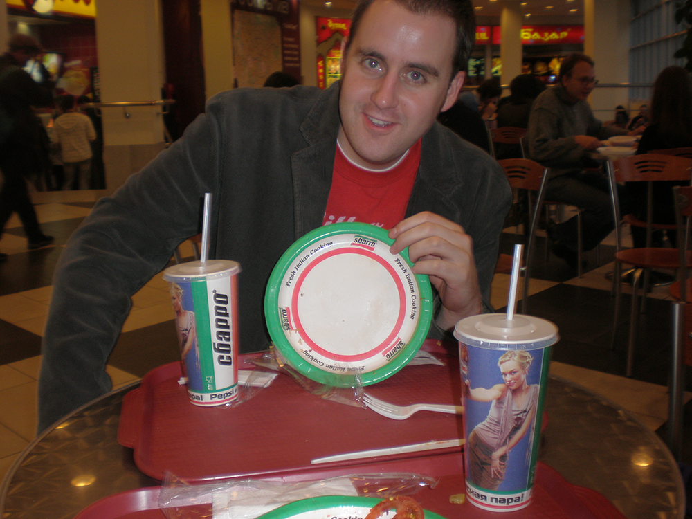

The language barrier really sticks it to you when it comes to dining. How can you order off a menu you can't read?
This is where you need to get creative, identifying restaurants where you will be able to order. Below, is a picture of our first Russian diner: American fast-food at the food court in Red Square's famous Gym (prounounced Gum) mall. (Fun fact: Kentucky Fried Chicken is everywhere over there).

We tried to limit our food expenditures to $25 a day.
Here are a few inexpensive places non-Russian speakers will be able to order and keep with t0 budget.